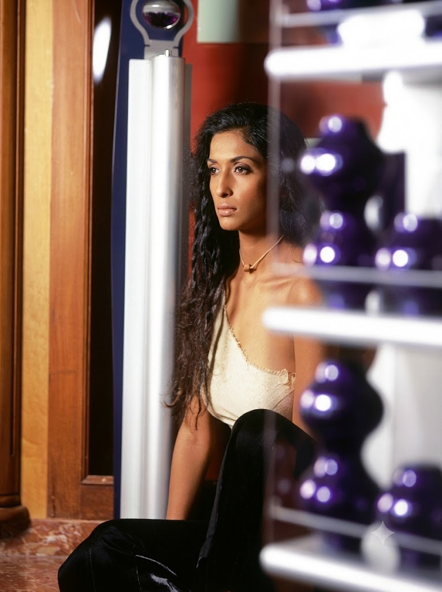

Fashion
A path shaped by creativity, purpose, and cultural storytelling.
From fashion education and television to luxury curation and mentoring, Nandini Kumar’s journey has been defined by a rare blend of artistic instinct and strategic foresight. Her career has evolved across fashion, media, experiential design, and cultural advocacy, always guided by a deep respect for craft, elegance, and meaningful narratives.
Guided by a foundation in Science and Mathematics and formal training in Fashion Design in Mumbai, she later expanded her perspective through entrepreneurial education at IIM Bangalore. That combination helped shape a career that bridges creativity with business, style with substance, and vision with execution.
Over the years, Nandini has worked across television, films, documentaries, advertising, fashion events, and luxury experiences. Her work has brought her into collaboration with leading brands and institutions, while also allowing her to champion the stories and traditions that matter most to Indian culture.
Today, her journey continues through NKFA, ArtistiqueTale, and bespoke wedding curation, each chapter reflecting a commitment to excellence, mentorship, and the creation of enduring experiences.
Guided by a foundation in Science and Mathematics and formal training in Fashion Design in Mumbai, she later expanded her perspective through entrepreneurial education at IIM Bangalore. That combination helped shape a career that bridges creativity with business, style with substance, and vision with execution.
Over the years, Nandini has worked across television, films, documentaries, advertising, fashion events, and luxury experiences. Her work has brought her into collaboration with leading brands and institutions, while also allowing her to champion the stories and traditions that matter most to Indian culture.
Today, her journey continues through NKFA, ArtistiqueTale, and bespoke wedding curation, each chapter reflecting a commitment to excellence, mentorship, and the creation of enduring experiences.
